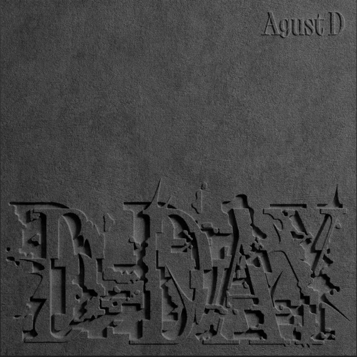

Min Yoon-gi
AGUSTD
Inicio
Galería
Biografía
Discografía
Eventos
Álbum 4 - D-DAY

Canciones
1. D-Day
2. Haegeum
3. HUH?! (feat. j-hope)
4. AMYGDALA
5. SDL
6. People Pt.2 (feat.IU)
7. Polar Night
8. Interlude:Dawn
9. Snooze (feat.Ryuichi Sakamoto, WOOSUNG of The Rose)
10. Life Goes On